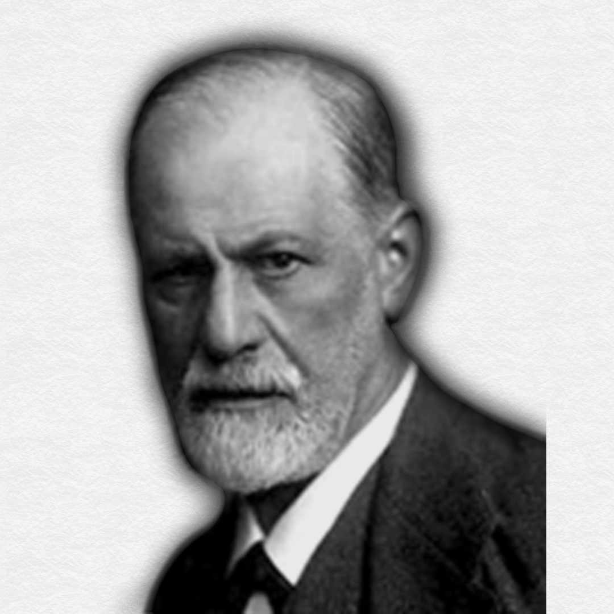
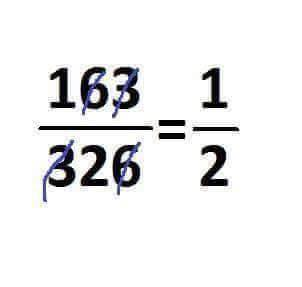

Dr. Profesor
|
Doctor en ciencias computacionales por la universidad de Wikipedia |
- Ingeniería en Sistemas Computacionales en UdW (Universidad de Wikipedia)
- Maestría en lenguas computacionales en TdW (Tecnológico de Wikipedia)
- Doctorado en Programación avanzada y resolución de problemas con algorítmos en UdW
- Reiniciar con éxito un módem
- Participación en lanzamiento de mísil Norcoreano
- Programador en Google
- Animador de playa
- 15 años en Tecnológico de India
- 2 años en Preparatoria Indigena de Viena
- 10 años en Tecnológico de Monterrey
Ich mag Kartoffeln
Muchos opositores del psicoanálisis suelen acordarse en ocasiones de que este arte no proviene de mí, sino de Breuer. Desde luego, sólo lo hacen en caso de que su posición les permita hallar algo digno de nota en el psicoanálisis; cuando no se ponen ese límite en su repulsa, el psicoanálisis es siempre, y sin discusión, obra mía.
- Sigmund Freud, padre del psicoanálisis -
Recientemente logre descubrir la fecha exacta del fin de los Jedi. Mi hijo, Luke Skywalker, los llevará a su fin. ¡Que viva el lado oscuro y el imperio galáctico!
Recientemente encontre un artículo sobre el psicoanálisis. Quiero compartirlo con mis subditos estudiantes y entusistas profesores.
Gabriel Rolón habla del desamor, del psicoanálisis como cura y de la grieta
JAJA un poco de humor

Darth Vader |
Maestro Sith |
|
Adolfo Hitler |
Lógica y aleman |
|
Maestro Yoda |
Maestro Jedi |
Copyright © Meetchers S.A. de C.V. Todos los derechos reservados